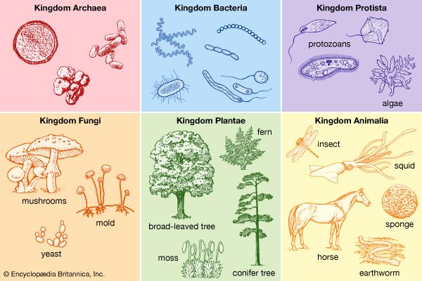

|

|

|

Classification of Big Cats:
What is considered a Big Cat? What classifies them that way?
It all has to do with the scientific classification of the genetic makeup of each, and what attributes are similiar to one another which can be cateogrized such as: diet, physical features, communication style, and geographical location.
All are under the Kingdom Animalia (animal), then their Class is Mamalia (mammal), and Order is Carnivora (carnivore) due to their diet.
From there we then see they are all in the Family of Felidae (feline [cat]), which then branches into the cateogry known as Genus of Panthera and Felinae.
The Big Cats are considered the following from the Panthera line: the lion, the tiger, the jaguar, the leopard, and the snow leaopard and from the Felidae line: the cheetah and cougar. The clouded leopard and the Sunda clouded leopard is classified as neither big nor small cat, and is considered the bridge between the Big Cat and small cat families. As we learn more about these majestic creatures, some classifications aren't entirely accurate as more studies have led to a better understanding;
such as the misconception that all Big Cats roar and all small cats purr.
Click on Life for ways to BETTER understand Big Cats!